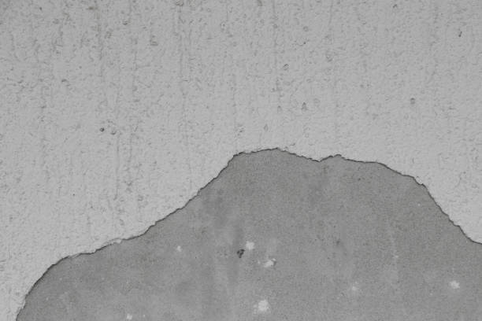
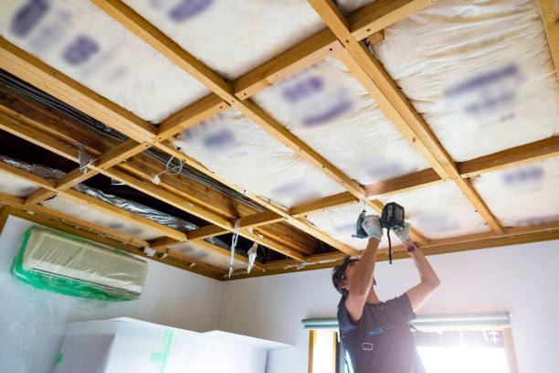
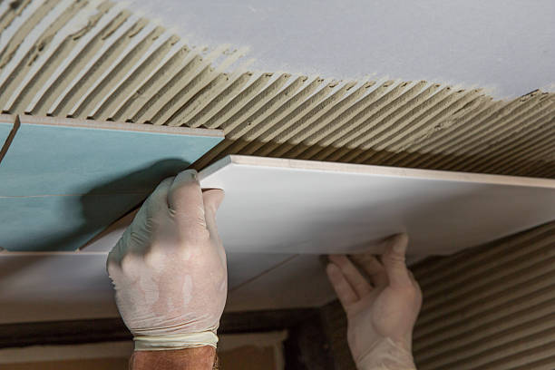
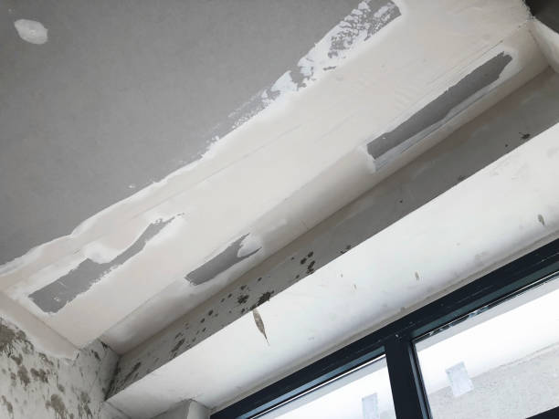

USA - Nationwide
info@divapopcornceilingremoval.xyz
USA - Nationwide
info@divapopcornceilingremoval.xyz

Give your ceilings a new life with our popcorn ceiling refinishing services . Enjoy a fresh look and improved aesthetics for your home or office.
Refresh your home with our popcorn ceiling refinishing in Usa - Nationwide. We expertly restore and update your ceilings, ensuring a flawless finish that enhances your decor.
Residential & commercial Popcorn ceiling removal
Quality services at affordable prices
Immediate 24/ 7 emergency services


If you're searching for popcorn ceiling removal near me in Usa - Nationwide, look no further. Our team specializes in removing outdated popcorn ceilings that detract from the beauty of your home or business. Popcorn ceilings, also known as acoustic ceilings, can trap dust, make a room feel dated, and even harbor allergens. Our local experts utilize professional tools and environmentally friendly techniques to ensure a spotless finish. With decades of experience in the ceiling removal industry, we guarantee a hassle-free process, safe removal, and a clean slate for your interior decorating. Choosing us means opting for quality craftsmanship and tailored service, ensuring your project is unique and perfectly suited to your style.

We understand that home renovation costs can pile up, which is why we offer affordable popcorn ceiling removal in Usa - Nationwide. Our pricing model caters to a variety of budgets, making it easier for you to upgrade your home without breaking the bank. We believe in transparency, so you’ll know exactly what to expect without hidden fees or surprise costs. Our efficient teams work diligently to minimize disruption while providing top-notch service. Utilizing cost-effective methods and top-tier materials, we ensure that your ceilings look stunning without the luxury price tag. Choose us for your popcorn ceiling project, and enjoy unparalleled value paired with exceptional results.

Sometimes, removing a popcorn ceiling isn't the answer, and repair is the best course of action. Our popcorn ceiling repair services employ industry-leading methods and high-quality materials to effectively restore the original integrity of your ceilings. Whether there are cracks, stains, or water damage, our team of specialists is trained to assess, repair, and refinish your ceilings to restore them to pristine condition.
Why choose our repair services? We understand the intricacies involved in ceiling repair, especially in older homes. Our professionals work diligently to ensure that repairs blend seamlessly with the existing structure, providing a flawless finish that meets our exacting standards. Coupled with our exceptional customer service and attention to detail, we are the go-to option for popcorn ceiling repairs in Usa - Nationwide.

When searching for the best popcorn ceiling removal companies you'll want a team that combines experience, reliability, and unmatched customer service. At Popcorn ceiling removal, we pride ourselves on being recognized as the leading professionals in this field. Our skilled contractors are fully equipped with the latest tools and training to ensure a smooth and effective removal process.
Why are we the best? Our commitment to quality means we take the time to understand your specific needs and preferences. We assess each project individually, providing a tailored approach. Our glowing customer reviews testify to our dedication to excellence and professionalism. Choose Popcorn ceiling removal and see why we are the best option for popcorn ceiling removal .

Your home is your sanctuary, and it should reflect your style and taste. Our residential popcorn ceiling removal service promises to elevate your living space. As popcorn ceilings fall out of favor, many homeowners are looking to make upgrades that improve both aesthetics and property value.
Our dedicated team is adept at working in residential areas, ensuring that minimal disruption is caused to your daily life. We recognize the importance of adhering to safety protocols, especially if your home has an older ceiling that might contain asbestos. We handle the entire removal process from start to finish, including any necessary cleanup, leaving your home ready for a smooth-ceiling finish or another texture of your choice.

For businesses looking to revitalize their commercial spaces, our popcorn ceiling removal services are a crucial investment. A clean, modern ceiling speaks volumes about your brand and enhances the overall impression of your business. We service a wide range of commercial properties, including offices, retail outlets, and restaurants, with a special focus on minimizing downtime during the removal process.
Our crew is efficient and experienced in commercial settings, ensuring that your project is completed on time and within budget. We understand the importance of maintaining a professional atmosphere and work according to your schedule to avoid disrupting your operations. Choosing us means prioritizing professionalism, quality, and excellence, all aimed at elevating your commercial environment in Usa - Nationwide.

Professionalism is pivotal when it comes to popcorn ceiling removal. Our professional popcorn ceiling removal services are designed for those who value quality and expertise. We employ trained technicians who know the ins and outs of effective ceiling removal while adhering strictly to safety regulations.
By choosing us, you're not just hiring a service; you’re engaging with a team that values precision, care, and diligence. Our crews utilize protective gear, safeguard flooring, and ensure the removal is both effective and minimally invasive. We stand by our work and are proud to offer a satisfaction guarantee—your expectations are our priority. Experience the professionalism of our popcorn ceiling removal services; you’ll be glad you did.

Finding reliable local popcorn ceiling contractors can be challenging. At Popcorn ceiling removal, we pride ourselves on our community ties and local expertise. Our team consists of professionals who not only understand the techniques best suited for popcorn ceiling removal but also appreciate the unique characteristics of homes and businesses .
What sets us apart? Our local presence means we are easily accessible, can quickly respond to your needs, and are familiar with the local regulations and building codes. We have built a reputation in Usa - Nationwide for quality workmanship and customer service, ensuring that our clients are always satisfied with their popcorn ceiling removal experience.

If your home was built before the 1990s, it’s crucial to consider the potential presence of asbestos in your popcorn ceiling. Our asbestos popcorn ceiling removal services are executed with utmost care and compliance. We perform comprehensive assessments to determine asbestos presence, followed by safe removal procedures that ensure the health and safety of your home.
Our qualified team is trained in hazardous material handling and adheres strictly to safety regulations. Having provided asbestos removal services for many years, we guarantee that your space will be treated with the highest commitment to safety and professionalism.

Once you’ve decided to remove your popcorn ceiling, you might be considering replacing it with a new texture. Our popcorn ceiling replacement services offer you a range of options, from smooth finishes to modern textures that enhance your home’s style.
We guide you through the selection process, offering various materials and textures that fit your aesthetic vision. Our skilled professionals ensure that the installation is flawless, creating a ceiling that becomes a statement piece in your home.

Ceiling texture removal can enhance the look of any room and increase your home's appeal. Whether you're looking to smooth out a tacky texture or simply want a fresh canvas for your ceilings, Popcorn ceiling removal offers expert ceiling texture removal services tailored to the specific needs of homes and businesses .
Why choose us for your texture removal? We utilize advanced tools and techniques designed to handle all types of ceiling textures efficiently. Our team operates with precision and care, ensuring that your walls and decor are protected during the process. The result is a clean, smooth surface ready for your next design vision. Trust Popcorn ceiling removal for ceiling texture removal done right.

Scraping away popcorn ceilings can be a messy task, but with Popcorn ceiling removal's professional popcorn ceiling scraping services, it doesn’t have to be. We use specialized equipment to minimize dust and mess, ensuring a smoother and faster removal process in Usa - Nationwide.
What sets our scraping services apart? Our skilled team is equipped to handle all sizes and types of projects, ensuring minimal disruption to your daily life. We pride ourselves on maintaining a clean work environment, removing debris as we go to leave your home looking pristine. Choose Popcorn ceiling removal for thorough and efficient popcorn ceiling scraping.

Understanding the popcorn ceiling removal cost can help you budget effectively for this essential home improvement project. Factors influencing cost include square footage, labor, materials, and whether asbestos may be implicated in your ceiling.
Our transparent pricing model provides detailed estimates upfront, allowing you to comprehend all potential costs associated with the service. We aim to offer competitive rates without compromising quality, eager to work within your budget and exceed your expectations.

Our ceiling popcorn removal services aim to modernize your interiors by eliminating outdated popcorn ceilings. Our team of highly trained professionals ensures that the removal process is efficient and clean, handling debris properly to leave your place spotless.
Utilizing premier equipment and techniques, we can tackle any size project, from small rooms to expansive commercial spaces. The removal will prepare your ceilings for refinishing or painting, ultimately elevating your property’s appeal.

After removing a popcorn ceiling, a smooth ceiling installation can dramatically alter the appearance of any room. Our smooth ceiling installation services in Usa - Nationwide focus on the seamless application of new finishes, providing a sleek and modern look for your interiors.
We are equipped with the tools and expertise necessary to install smooth ceilings professionally, ensuring a flawless surface ready for painting or further decoration. With our attention to detail and commitment to quality, you can rely on us for exceptional results that enhance your space. Choose our smooth ceiling installation services for a chic and contemporary upgrade in your home.

If your popcorn ceilings are showing wear and tear, our popcorn ceiling resurfacing services can rejuvenate your space. We offer specialized resurfacing solutions that not only hide imperfections but enhance the overall design of your ceilings. By using quality materials, we bring a fresh look that aligns with your aesthetic preferences. Our team works diligently to ensure that you are involved in the process, providing options and advice to achieve your desired outcome. With our commitment to quality and customer satisfaction, your ceilings will be transformed into stunning features of your home. Trust us for expert popcorn ceiling resurfacing that restores beauty to your living spaces.

Safety is paramount, especially when dealing with older popcorn ceilings that may contain harmful materials. Our safe popcorn ceiling removal ensures that all health risks are mitigated, allowing you to undertake your renovation with peace of mind.
How do we ensure safety? At Popcorn ceiling removal, we follow strict safety protocols, including thorough inspections for asbestos and lead. Our licensed professionals use safe techniques and protective equipment while working in your home. We provide you with a comprehensive report after assessments, so you are well informed. Choose us for a secure and reliable popcorn ceiling removal process .

Selecting the right contractor can make all the difference in achieving your desired outcome. Our team comprises some of the best popcorn ceiling contractors in Usa - Nationwide, dedicated to delivering superior service and results.
We take the time to understand your specific needs and provide tailored solutions to meet those requirements. Our focus on customer satisfaction, quality workmanship, and reliability has positioned us as a trusted leader in the popcorn ceiling removal industry. When you work with our contractors, you engage with professionals who take pride in their work and aim to exceed your expectations.

Our local ceiling removal services offer homeowners and businesses unparalleled convenience and expertise. Being a local business, we understand the specific needs of our community, making our services even more personalized.
Choosing local means shorter wait times, better communication, and a deep commitment to serving your needs. We take great pride in our work and aim to contribute positively to the aesthetics and safety of our community.

After successfully removing popcorn ceilings, painting is an excellent way to bring life and vibrancy back into your spaces. Our popcorn ceiling painting services are tailored to provide a fresh coat of paint, enhancing the ambiance and character of your home.
Our experts guide you through color selections, ensuring a tasteful and modern finish that perfectly complements your interiors. We use premium paints and innovative techniques to achieve a professional-grade outcome every time. By choosing our painting services, you can transform a once dull ceiling into a stunning focal point. Let us help you revitalize your space with our speed and efficiency.

Refinishing your ceiling texture is an art form that we take seriously. Our ceiling texture refinishing services focus on providing a perfect, updated texture that enhances your home’s aesthetic. Whether you want a subtle finish or a bold statement, our team has the skills to achieve it.
We evaluate the current condition of your ceilings and provide a range of refinishing options that suit your style preferences. Our commitment to quality craftsmanship and attention to detail ensures a beautiful end result every time. Trust us to refine your ceiling textures, enhancing your home's beauty and character.

When removing a popcorn ceiling, it’s not uncommon for minor repairs to be needed afterward. Our popcorn ceiling removal and repair services ensure that your ceilings are left in impeccable condition.
Why should you let us handle both removal and repair? Our team is equipped to not only remove the popcorn texture but also to assess and fix any underlying damage that may have occurred over time. We use the best materials and methods to ensure a seamless finish that matches your newly smooth ceiling. Choose Popcorn ceiling removal for a complete service experience that does it all in Usa - Nationwide.

Our acoustic ceiling removal services in Usa - Nationwide are ideal for homeowners and business owners aiming to replace dated textures with modern finishes. Acoustic ceilings, often characterized by their bumpy texture, tend to accumulate dust and can diminish the overall appeal of your interiors. Our skilled technicians are experienced in safely removing these ceilings, providing a seamless finish in their place. We use advanced techniques and tools to ensure that your space remains clean and minimally disrupted during the process. Trust us to provide reliable acoustic ceiling removal that revitalizes and enhances your property’s value.

Our commitment to sustainability is evident in our eco-friendly ceiling removal services in Usa - Nationwide. We understand the importance of minimizing our impact on the environment, and we utilize practices that are safe for both your home and the planet. This includes the use of non-toxic materials and proper disposal methods for any waste generated. Our skilled team is trained in sustainable techniques that deliver impeccable results without compromising your health or the environment. Choose us for your eco-friendly popcorn ceiling removal, and take a step towards greener renovation solutions that you can feel good about.
USA - Nationwide Popcorn ceiling removal Pros
(877) 848-1711
info@divapopcornceilingremoval.xyz
09.00 AM - 09.00 PM
09.00 AM - 12.00 PM